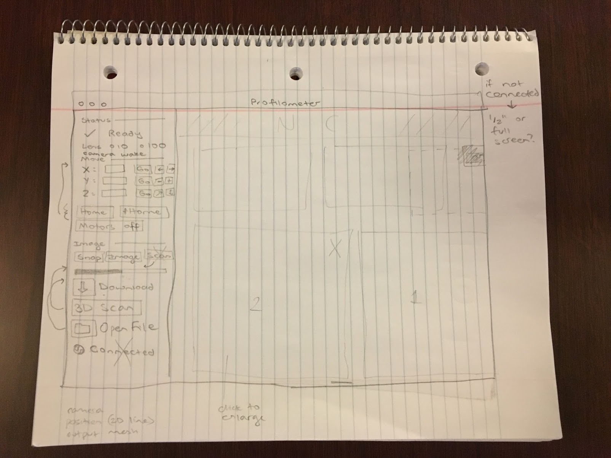

Profilometer - software architecture March 15, 2018
The software needed to run the optical profilometer has fundamental components: one to run on the Tinkerboard and do most of the work, and a user interface. This could all be rolled into one, but for the sake of ease of use, stability, my curiosity about web apps, and the Tinkerboard’s single graphics output channel, we’ll build this out as two separate applications.
Although there are a number of precidents for machine control software of this nature using a direct USB or ethernet connection to the machine in question, I think the link ought to be accomplished by WiFi and a server. Endless, frustrating 3D printer experience has given me strong feelings about this. The machine is run by a full-blown computer that is more than up to the task, and ought to be able to stand alone. Besides, I want to build a system that more closely resembles one that would be found in a commercial product.
The Tinkerboard software will do the majority of the work. It will be in charge of all the primitive operations of the machine—displaying graphics on the projector, operating the motors via GPIO, and capturing images from the camera, but also higher level functionality. The machine vision functionality will run on the Tinkerboard, the final mesh will be assembled on it, and the program that directs the entire scanning procedure will run on it. It will take a command from the server, do its business while sending regular status updates, and then upload its output file to the server. The user will be able to monitor the scanning process from the frontend, but if he signs off the process will carry on without him.
The server will be extremely straightforward, serving as a table across which to pass messages and a repository to store files. Commands will be passed from the frontend to the Tinkerboard across it, and will be marked as executed by the Tinkerboard. Status updates will be posted from the Tinkerboard. Image and mesh files from the Tinkerboard will be uploaded to the server to be accessed by the frontend.
The frontend itself will allow the user to manually input commands to control the machine, initiate programs to image and scan, and view images and meshes output by the profilometer.

After playing around with REST APIs built with Node/Express, I realized that Firebase exists, and there’s really no need to mess with anything else. Firebase is essentially a realtime backend-as-a-service, meaning that you can import your database and then treat it like a local variable. I’ll use a realtime firestore to handle communications, handling custom Command and StatusUpdate JSON objects, and a file storage system to handle images and meshes.
The frontend will be built in Angular, using some sort of CSS framework—Bootstrap? Materialize? Bulma? Components will include a navbar, a side bar from which the user will be able to select different pieces of functionality, such as machine control, imaging, and 3D scan. The main pane of the screen will be the router outlet, which will display the actual functionality in question. A service will be used to communicate with the Firebase, submitting Commands and tracking their status, receiving StatusUpdates, and accessing files. It will be built out in stages, beginning with a super simple way to submit Commands manually and view those already on the server.
The architecture of the Tinkerboard app is a somewhat less obvious problem, but I’ve opted for the Angular/Electron route. The Electron app will run upon bootup of the Tinkerboard’s Linux-based OS, connect to the Firebase via a service, and display the commanded graphics output to the projector. The DataService will make the contents of the Firebase accessible as an observable to the graphics output component, which will interpret incoming commands pointed at it. Otherwise, it will pass all updates to parser functions inside the seperate services that will govern the camera and GPIO functionality. A seperate program service, also callable from the server, will also have access to each of the individual pieces, and will be able to direct the operation of the machine as it performs a scan.
Machine vision functionality will be built on OpenCV, probably in a seperate Python module. Lots to build out before I can worry about this.
Source code for the frontend and Tinkerboard app are available on my GitHub.